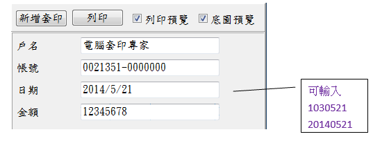

表格套印–功能說明
二、輸入功能視窗

三、功能項目說明：
1.帳號管理：管理使用者的基本資料及相關帳號，這些資料將用於表格套印。
2.客戶管理：管理支票的收票人、匯款的收款人等類型的相關資料。表格管理：
3.套印內容：設定表格套印所需之文字及圖案，也可以改變套印項目的大小、位置等屬性。
4.輸入設定：
(1)協助使用者以最簡單的方式完成輸入。
(2)可以增加查詢欄位，以輸入代號(如銀行帳號、客戶編號)的方式取得多種資料。
(3)設定各式操作強化及輔助資料輸入。(例如限定輸入數字)
5.存檔設定：記錄已完成套印的內容。
6.套印記錄：
(1)執行套印後相關資料的記錄，可進行統計分析或列印相關報表。
(2)任何表格均可進行套印記錄，但該表格需進行「存檔設定」。
7.領用登錄：將表格號碼(票號)登錄備用
8.匯入套印：利用檔案匯入的方式，一次套印多筆資料。
9.印表機：指定用於套印的印表機及相關參數設定。
10.表格複本：同一表格但格式不同時使用，例如貴公司同一家銀行有多個支票存款帳號時，
每個帳號的商標、套印內容可能不盡相同，甚至連格式都不同，此時只要利用本項功能，
就可以為每一個帳號產生特有的套印內容，讓同一種支票隨著帳號的不同而個別客製化
內容。